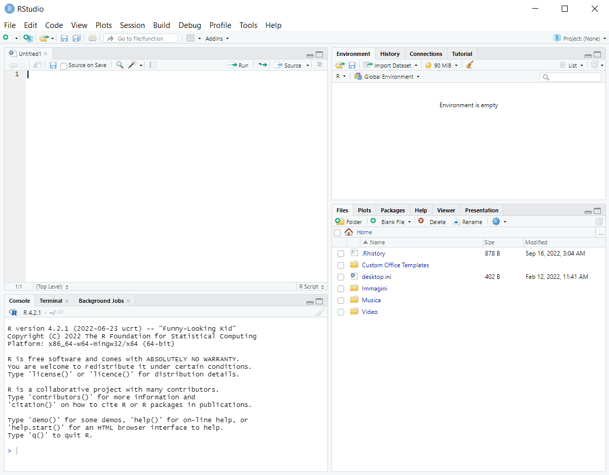
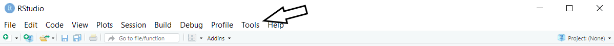
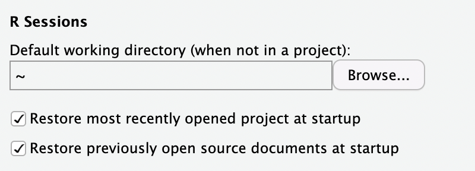
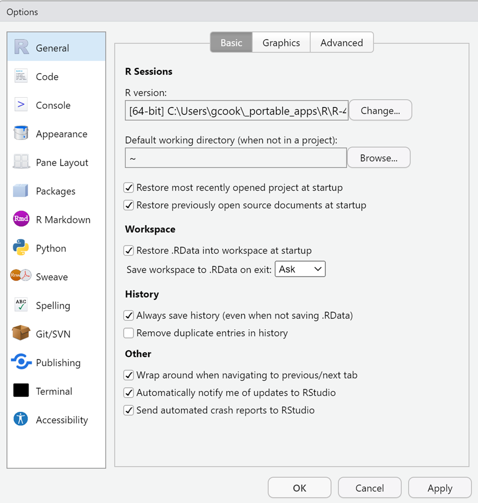
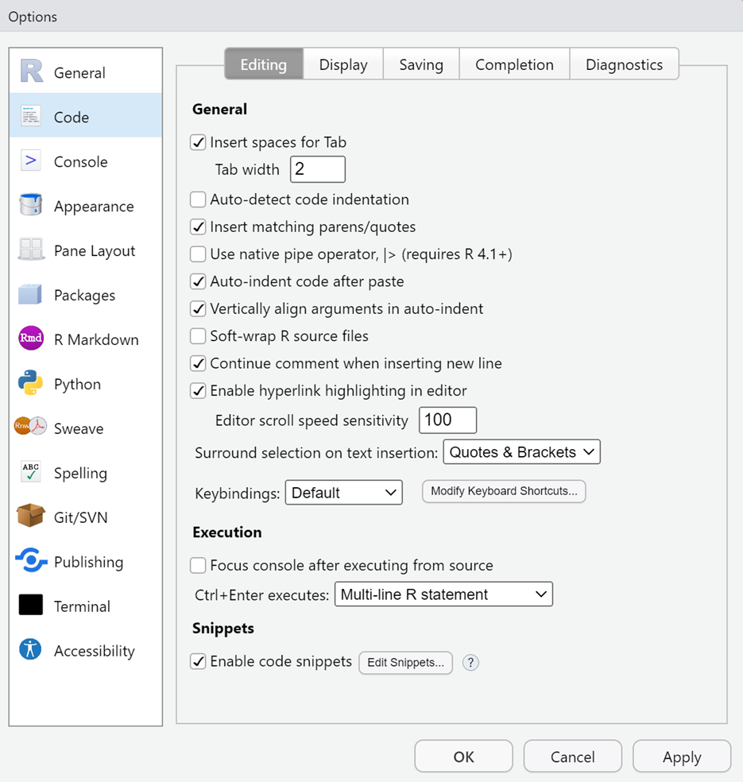
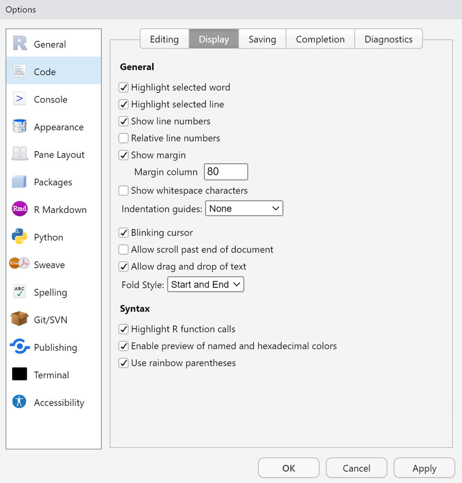
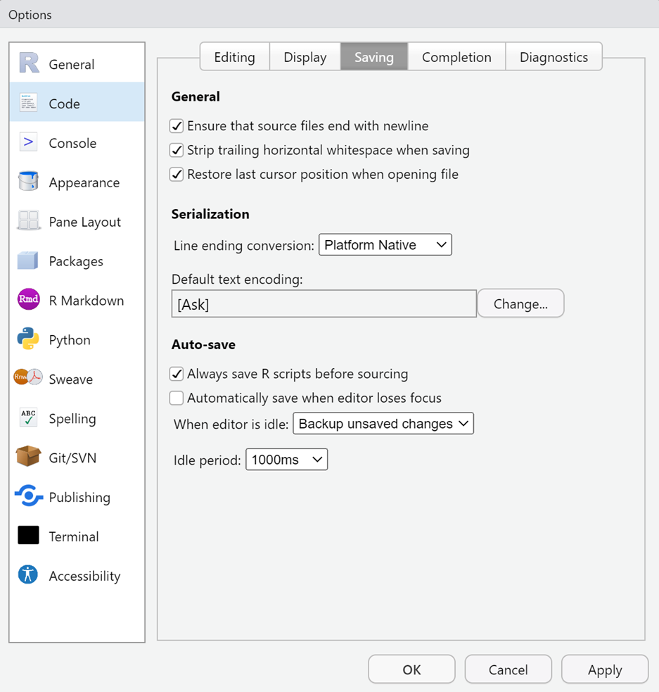
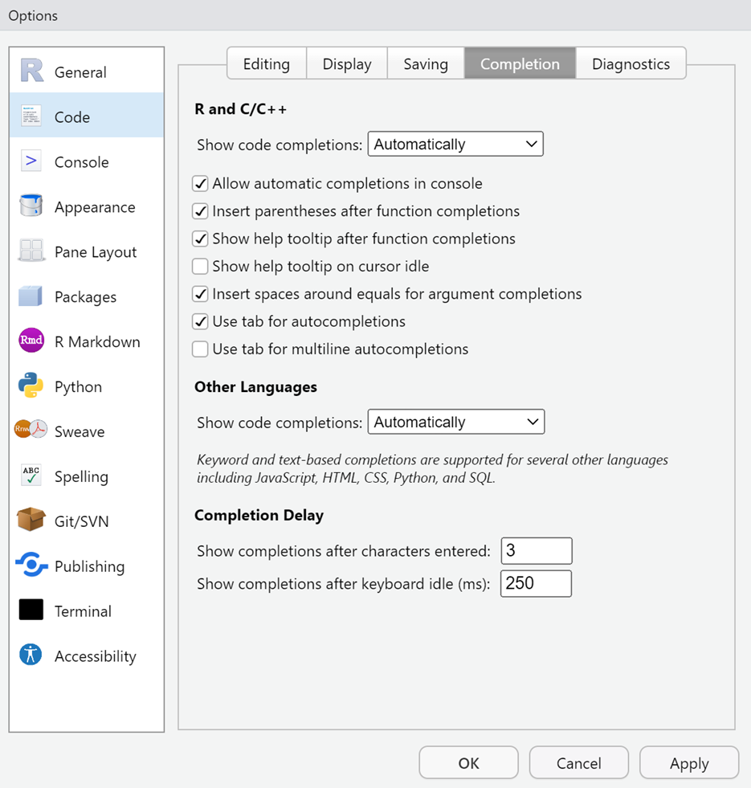
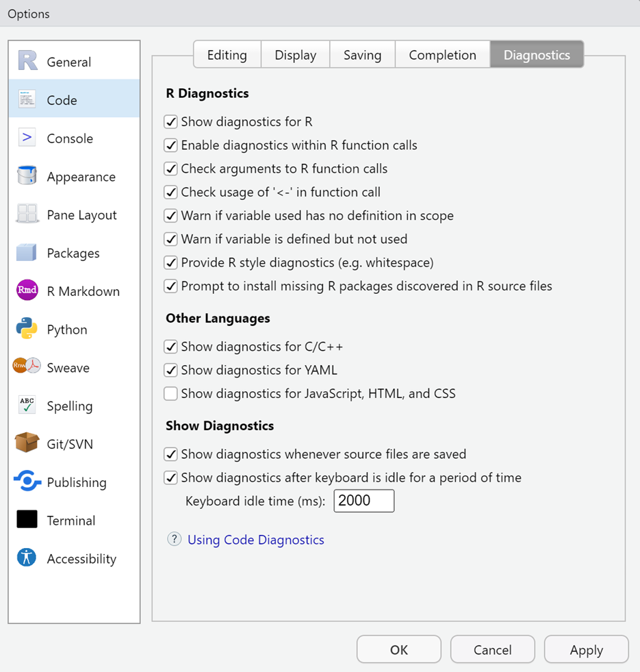
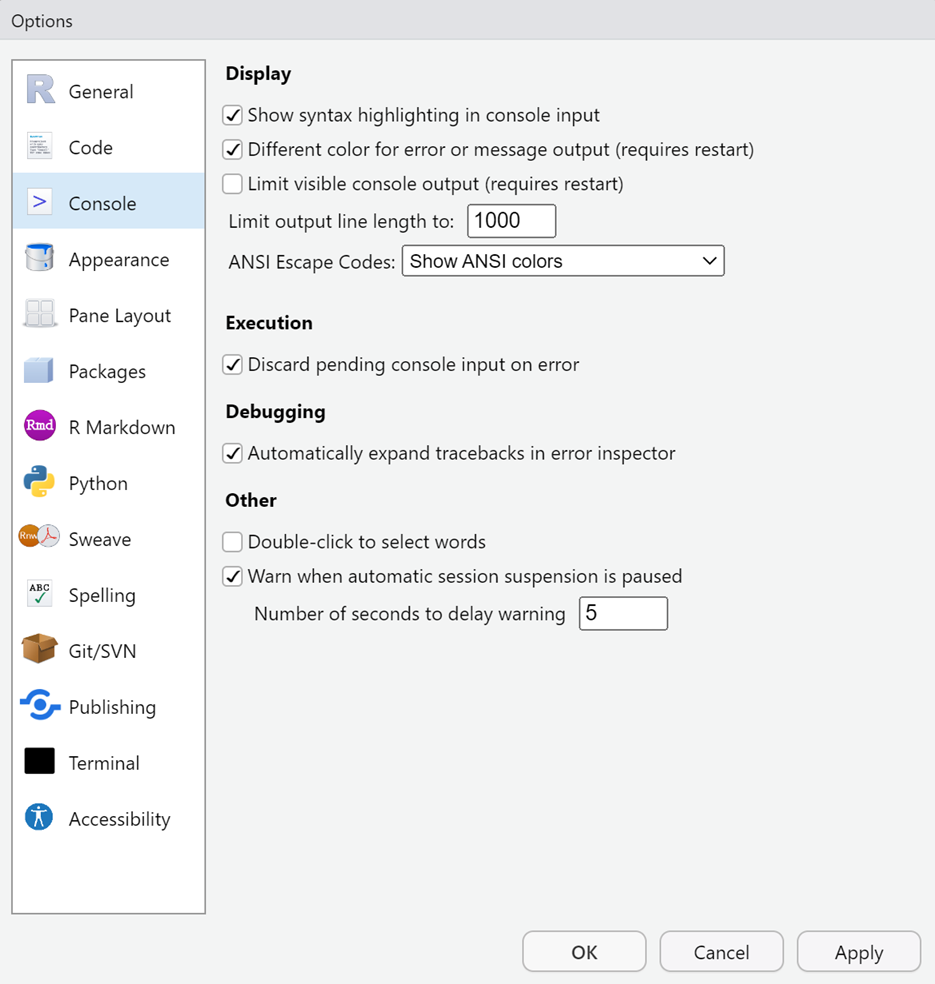

Installing R & RStudio
Overview
For this course, we will use the R programming language and the RStudio IDE for manipulating data and creating data visualizations.
To Do
Due by class time on the first day of class.
Tasks
The first step for this course is to install and configure some software. If you have these installed on your computer, you will need to ensure you have the correct versions of software and libraries installed.
- Download and Install
R - Download and Install
RStudio - Configure
RStudio - Install
Rlibraries/packages needed
Optional Readings
If you need a refresher on the RStudio IDE, consider this intro to R.
If you need a refresher on R Markdown, consider this link on working with RMarkdown.
Downloading Software
Determining the version of your computer’s operating system
Your version of operating system will dictate which version of R to download and install. Make note of your computer’s operating system.
Windows systems are easier and Windows 10 and 11 operating systems will both use the same R versions.
Macs are somewhat more complicated. The version depends on your cpu. Visit this link to determine.
There will be two cpu options, Intel 64-bit for macOS 10.13 or Apple silicon arm64 for macOS 11 and higher.
Cloud Options:
If you do not have a laptop (let me know) or do not have 5GB of hard drive space available on your computer, you might consider a cloud version of the software. One is maintained by Posit (formerly RStudio) and the other is maintained by CMC.
Posit (25 free compute hours a month – make time out)
Remote Desktop Protocol (No limit on compute hours) (contact me if interested). This is managed by CMC but may not be reliable.
Downloading R
Once you know your processor, navigate to https://cran.r-project.org/ and in the “Download and Install R” section, select your operating system. You can also select from below and follow the indented sections that follow.
Windows users should select the base version of R and download version 4.5.1 (no other version) to your computer. If this version is not on the main page, go to the “Other Builds” section and select “previous releases” and download the correct version.
Mac users should download either R-4.5.1.pkg or R-4.5.1x86_64.pkg version depending on the cpu noted earlier. Do not download any version other than 4.5.1 and please do not update throughout the semester.
Downloading RStudio
You will need RStudio Version 2025.05.1-513. Use the urls below to download RStudio and save it to the same directory location on your computer as you saved R.
Windows 10/11: https://download1.rstudio.org/electron/windows/RStudio-2025.05.1-513.exe
MacOS 12+: https://download1.rstudio.org/electron/macos/RStudio-2025.05.1-513.dmg
Linux: go to https://posit.co/download/rstudio-desktop/
Note: If you have a 32bit operating system, you will need to install an older version: https://www.rstudio.com/products/rstudio/older-versions/
Installing R and RStudio on your Computer
In order to prevent any possible future headaches or constraints, I would ensure you have about 10-15GB of hard drive space if you want to use your laptop for the project. You will need about 10GB for the R install and libraries and 1GB for the RStudio install. Depending on your chosen project, data may also be up to 5GB in some rare cases. If you have space constraints, I encourage you to offload unnecessary files on your computer to an cloud platform.
Installing R (then install RStudio)
Installing should be easy and you can accept all of the defaults although the desktop icons are not needed, especially for R because you will never need it; RStudio will find R for you. You can follow these videos for simple installing.
PC: How to Install R and R Studio on Windows 10/11
Mac: Installing R and RStudio on a Mac
Note: If you leave the desktop icon for R, you can remove that later. You will never need it because RStudio will find R for you.
Additional Step for Mac Users:
Download and Install XQuartz
Some functions in R require an “X11 Server” and/or libraries associated with an X11 server. Apple does not provide this software with OS X anymore so unfortunately you have to do it on your own via a third-party application called XQuartz for OS X 10.9 or later.
Use the url below to download the XQuartz file and save it to your computer. Follow the same install instructions as above for installing the XQuartz file.
For macOS 10.9 or later, download this XQuartz file and save it to your computer and install: https://github.com/XQuartz/XQuartz/releases/download/XQuartz-2.8.5/XQuartz-2.8.5.pkg
Verify that RStudio is communicating correctly with R
Launching the RStudio application.
If RStudio and R are communicating correctly, you should see an RStudio window open with the R console opened which should look similar to that shown below. Your R version should be listed at the top of the console (4.5.1).
Configuring RStudio
A. Go to Tools > Global Options under the General + Basic Tab

R Sessions > R version: There should be a path to the installed R version listed if you installed R before RStudio. You should not need to change this unless you have another version installed on your system. If you do have multiple versions, browse to version 4.5.1. Do not update R or any libraries during this course.
Mac Users may not see an R version and may only see the following:

If you are concerned that R may not be there, type 2 + 2 into the R console and press Enter/Return. If the solution is returned, then R is installed.
B. Other options: Check the other check boxes as indicated in the images below.
GENERAL (basic):

CODE (editing):

CODE (display):

CODE (saving):

CODE (completing):

CODE (diagnostics):

CONSOLE:

APPEARANCE:
Appearance is one of preference. You can try out different RStudio Themes and Editor Themes to see what you like. Due to a degenerative eye disease which includes photophobia as a symptom, I am able to use only dark-mode editor themes. In order to help you with your code, if a dark-mode theme does not affect you negatively, please use one. Videos will use the editor theme called Made of Code because this theme appears to provide me with the best visual contrast among functions and objects and does not cause me any discomfort. This theme is available in the start-project repository which is used in the module on Project Management. The Theme can also be found here or found here. A native RStudio theme that I have used in the past is Merbivore. The font I use is Lucida Console.
Please use a theme that you find most comfortable using. Please just understand that my disability may prevent me from reading your screen in class if your theme is not dark. You may just have to verbatim explain what is on your screen so that I can best help you.
The installation process will take quite some time (15 minutes) especially depending on your computer so do this at a time you do not want to use your system. Plug in your computer and take a break. Take a break and do something else.
OTHERS: We will address in class as appropriate.
Installing R libraries/packages
After you have completed your R installation, you will need to install different libraries that we will use a various times over the course of the semester. Rather than installing the libraries manually, (1) copy the code below, (2) paste it into the RStudio Console window at the > prompt (see image), and then (3) press enter to execute.
Copy this code:
source('https://raw.githubusercontent.com/slicesofdata/dataviz25/main/src/psyc167_libraries.R')
Paste the code into your R console at the > prompt:
Press return/enter
Take a break while these install. Will take a while.
R version 4.5.1 (2025-06-13 ucrt)
Platform: x86_64-w64-mingw32/x64
Running under: Windows 11 x64 (build 26100)
Matrix products: default
LAPACK version 3.12.1
locale:
[1] LC_COLLATE=English_United States.utf8
[2] LC_CTYPE=English_United States.utf8
[3] LC_MONETARY=English_United States.utf8
[4] LC_NUMERIC=C
[5] LC_TIME=English_United States.utf8
time zone: America/Los_Angeles
tzcode source: internal
attached base packages:
[1] stats graphics grDevices utils datasets methods base
other attached packages:
[1] htmltools_0.5.8.1 DT_0.33 openxlsx_4.2.8 vroom_1.6.5
[5] lubridate_1.9.4 forcats_1.0.0 stringr_1.5.1 dplyr_1.1.4
[9] purrr_1.1.0 readr_2.1.5 tidyr_1.3.1 tibble_3.3.0
[13] ggplot2_3.5.2 tidyverse_2.0.0
loaded via a namespace (and not attached):
[1] rappdirs_0.3.3 generics_0.1.4 stringi_1.8.7 hms_1.1.3
[5] digest_0.6.37 magrittr_2.0.3 evaluate_1.0.4 grid_4.5.1
[9] timechange_0.3.0 RColorBrewer_1.1-3 fastmap_1.2.0 R.oo_1.27.1
[13] rprojroot_2.1.0 jsonlite_2.0.0 zip_2.3.3 R.utils_2.13.0
[17] scales_1.4.0 httr2_1.2.1 cli_3.6.5 crayon_1.5.3
[21] rlang_1.1.6 R.methodsS3_1.8.2 gitcreds_0.1.2 bit64_4.6.0-1
[25] withr_3.0.2 yaml_2.3.10 tools_4.5.1 tzdb_0.5.0
[29] pacman_0.5.1 here_1.0.1 credentials_2.0.2 curl_6.4.0
[33] png_0.1-8 vctrs_0.6.5 R6_2.6.1 lifecycle_1.0.4
[37] bit_4.6.0 htmlwidgets_1.6.4 pkgconfig_2.0.3 pillar_1.11.0
[41] gtable_0.3.6 Rcpp_1.1.0 glue_1.8.0 gh_1.5.0
[45] gert_2.1.5 xfun_0.52 tidyselect_1.2.1 rstudioapi_0.17.1
[49] sys_3.4.3 knitr_1.50 farver_2.1.2 rmarkdown_2.29
[53] compiler_4.5.1 askpass_1.2.1 openssl_2.3.3